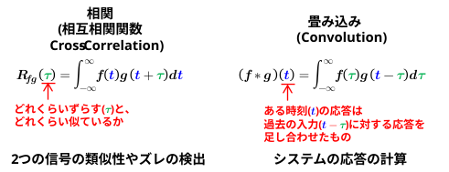
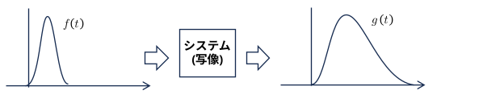
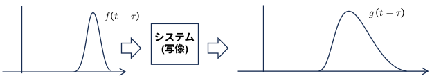
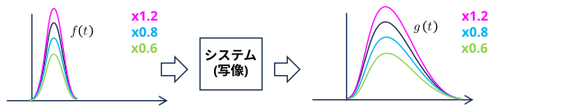
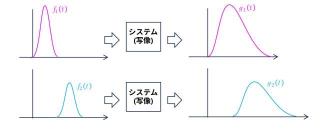
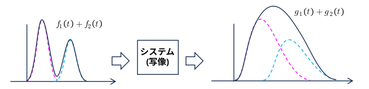
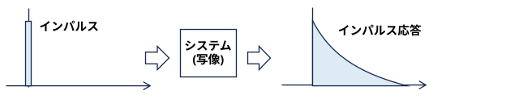
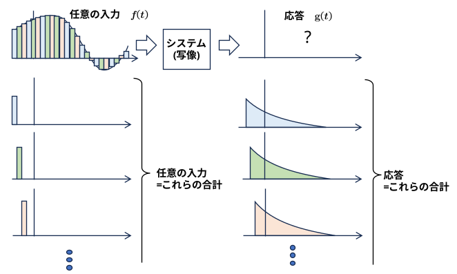
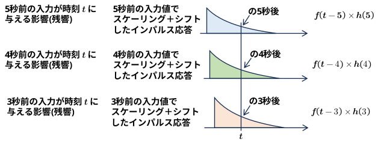
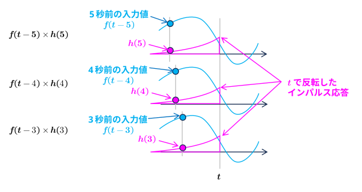

「相関（Correlation）」の概念を世界で最初に定式化したのは、イギリスの天才学者フランシス・ゴルトン（Francis Galton）です。彼はチャールズ・ダーウィンのいとこであり、進化論に強い影響を受けて「人間の才能や身体的特徴はどのように親から子へ遺伝するのか」を研究していました。
ゴルトンは、多くの親子の身長データを集めて散布図を描きました。すると、「背の高い親の子は背が高くなる傾向があるが、親ほど極端に高くはならず、世代を重ねると人類の平均値へと戻っていく（平均回帰）」という現象を発見します。
彼は、2つのデータ（親の身長と子の身長、あるいは右腕の長さと左腕の長さなど）が「因果関係（片方がもう片方を作っている）」とは言えないまでも、「お互いに連動して動く（Co-relation = 共同関係）」という性質に気づき、これを「相関（Correlation）」と名付けました（1888年発表）。
ゴルトンが直感的に見つけた相関の概念を、数学的に厳密な式（現代の私たちが使う「ピアソンの積率相関係数」）に仕上げたのが、彼の後輩である数学者カール・ピアソン（Karl Pearson）です
ピアソンは、ゴルトンの手法に「最小二乗法」などの数学的理論を組み合わせ、データの連動度合いを 「 \(-1\) から \(+1\) までの間の1つの数値」で表しました。
20世紀中期、ラジオ、レーダー、電話などの通信技術が爆発的に発展しました。しかし、空中を飛ぶ電波には必ず激しい「雑音（ノイズ）」が混ざります。
工学者たちは、「送信した電波（元の関数）」と「ノイズまみれで受信した電波（受け取った関数）」の間に、どれくらい元の形が残っているかを調べようとしました。データ（点）と違って波は時間がズレて届くため、「時間を少しずつずらしながら積算する」というアプローチが必要になります。こうして、統計学の相関係数の数式を時間軸（積分）に拡張した「相互相関関数」が誕生しました。
畳み込みの数式の原型は、1750年代〜1760年代にかけて、ジャン・ル・ロン・ダランベール（Jean d'Alembert）やレオンハルト・オイラー（Leonhard Euler）といった18世紀の偉大な数学者たちによって「発見」されました。
彼らは、天文学や物理学の計算で出てくる難しい微分方程式を解こうとしていました。その際、「複雑な方程式を直接解くのは無理だが、シンプルな部品に分解して積分すれば解けるのではないか」と考えました。
この計算プロセスの途中で、現代でいう \(\int f(u)g(x-u)du\) という、片方の関数を反転（\(-u\)）してずらす形の式が自然に導き出されました。当時の数学者にとっては、物理的な意味があるというよりは、「この形で計算すると方程式が綺麗に解ける」という便利な数学的ツール（オイラー変換などと呼ばれた）でした。
この数式に決定的な物理的意味を与えたのが、1822年に『熱の解析的理論』を発表したジョゼフ・フーリエ（Joseph Fourier）です。
フーリエは「鉄の棒の一端を温めたとき、熱はどのように伝わるか」を研究していました。ある瞬間の温度を計算するには、「今加えている熱」だけでなく、「過去に加えた熱が、時間の経過とともにどれくらい冷めながら（減衰しながら）残っているか」をすべて足し合わせる（積分する）必要がありました。
「過去に加えた熱ほど、今受ける影響は小さくなる（時間が経っているから）」という関係を式にすると、時間の引き算（\(t - \tau\)）が必要になります。これが、畳み込みにおける「関数を時間反転させる」ことの物理的な意味（過去の影響を現在に積み重ねる）となりました。
20世紀に入ると、電話や無線通信、オーディオ技術の発展に伴い、畳み込みは工学の主役に躍り出ます。ここで「インパルス応答」という概念と結びつきました。
例えば、コンサートホールで「パン！」と手を叩いたとき、その音がどう響くか（エコーの残り方）を記録した波形を「インパルス応答（系の特性）」と呼びます。
ホールで歌手が歌を歌ったとき（入力波形）、どんな響きになるか（出力波形）を計算したいとします。歌の音声信号は、一瞬一瞬の「手拍子（インパルス）」の連続とみなせます。そのため、「歌の信号」と「ホールの響き（インパルス応答）」を畳み込むことで、歌手が本当にそのホールで歌っているかのようなリアルな残響音を計算できるようになりました。
数学的なこの操作は、もともと「合成積（Resultant）」などと呼ばれていました。しかし1923年、ドイツの数学者グスタフ・デッチュが、関数をひっくり返して重ね合わせる様子を「折りたたむ（Faltung）」と表現しました。これが英語に翻訳されて Convolution（ラテン語の「巻き込む、共に転がる」が語源）となり、日本語で「畳み込み」と訳されました。
システムの応答が時間や場所によって変わらない場合、シフト不変性がある (Shift-Invariant) という。
※ 時系列の場合、シフト不変性があることを時不変 (Time-Invariant) があるという。
入力 \(f(t)\) に対するシステムの応答が \(g(t)\) だったなら

入力 \(f(t-τ)\) に対するシステムの応答が \(g(t-τ)\) になる

システム応答が、ベクトル空間の演算 (スカラー倍、ベクトル和) の構造を保つ：準同型 (Homomorphism) 場合、線形性がある (Linear) という。
スカラー倍の準同型： スカラー倍の応答 = 応答のスカラー倍
入力 \(f(t)\) に対するシステムの応答が \(g(t)\) だったなら
入力を \(a\) 倍した \(a\cdot f(t)\) に対するシステムの応答は \(a\cdot g(t)\) になる。

和の準同型： 和の応答 = 応答の和
入力 \(f_1(t)\) に対するシステムの応答が \(g_1(t)\)、 入力 \(f_2(t)\) に対するシステムの応答が \(g_2(t)\)、 だったなら

入力 \(f_1(t)+f_2(t)\) に対するシステムの応答は \(g_1(t)+g_2(t)\) になる。

インパルスを入力したときの、システムの応答をインパルス応答という。

任意の入力はインパルス列に分解することができる。
そのインパルス列に対するシステムの応答は、時不変性と線形性により、インパルス応答をスケーリング＋シフトしたものを足し合わせたものになる。

式で書くと

となる。
これは、インパルス応答をスケーリングせず、時刻 \(t\) で反転したものと、入力信号の相関と同じ式になる。
